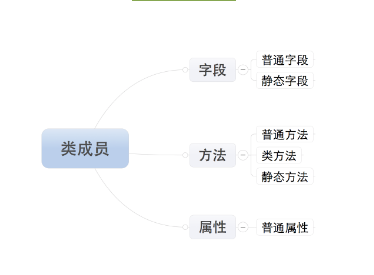

本篇记录一下Python类的成员、成员修饰符、类的特殊成员
类的成员
- 字段
- 方法
- 属性

普通字段保存在对象所在的内存空间中，对象拷贝静态字段到自己的内存空间，其他成员都在类的内存空间，使用时再调取。
1,字段
- 普通字段属于对象
- 静态字段属于类，对象只是拷贝静态字段，修改不影响静态字段原来的值，和Java不同
class fathclass:
name = 'njcx'
def __init__(self,age):
self.age=age
def getName(self):
return self.age
print fathclass.name
day = fathclass(18)
print day.name
day.name = 'oldnjcx'
#修改对象name
print day.name
print fathclass.name
#原来的name并没有发生改变
fathclass.name = 'youngnjcx'
#通过类修改静态字段并不影响对象的静态字段
print day.name
print fathclass.name
2，方法
- 普通方法 由对象调用；至少一个self参数；执行普通方法时，自动将调用该方法的对象赋值给self；
- 静态方法 由类调用； 至少一个cls参数；执行类方法时，自动将调用该方法的类复制给cls；
- 类方法 由类调用；无默认参数；
其中，静态方法通过@staticmethod修饰，类方法通过@classmethod修饰, 下面列举一些
- 类方法用在模拟java定义多个构造函数的情况。 由于python类中只能有一个初始化方法，不能按照不同的情况初始化类
# coding:utf-8
class Book(object):
def __init__(self, title):
self.title = title
@classmethod
def create(cls, title):
book = cls(title=title)
return book
book1 = Book("python")
book2 = Book.create("python and django")
print book1.title
print book2.title
- 静态方法调用另一个静态方法，如果改用类方法调用静态方法，可以让cls代替类， 让代码看起来精简一些。也防止类名修改了，不用在类定义中修改原来的类名
# coding:utf-8
class Foo(object):
X = 1
Y = 2
@staticmethod
def averag(*mixes):
return sum(mixes) / len(mixes)
@staticmethod
def static_method():
return Foo.averag(Foo.X, Foo.Y)
@classmethod
def class_method(cls):
return cls.averag(cls.X, cls.Y)
foo = Foo()
print foo.static_method()
print foo.class_method()
- 继承类中的区别 从下面代码可以看出，如果子类继承父类的方法，子类覆盖了父类的静态方法， 子类的实例继承了父类的static_method静态方法，调用该方法，还是调用的父类的方法和类属性。 子类的实例继承了父类的class_method类方法，调用该方法，调用的是子类的方法和子类的类属性。
# coding:utf-8
class Foo(object):
X = 1
Y = 2
@staticmethod
def averag(*mixes):
return sum(mixes) / len(mixes)
@staticmethod
def static_method():
return Foo.averag(Foo.X, Foo.Y)
@classmethod
def class_method(cls):
return cls.averag(cls.X, cls.Y)
class Son(Foo):
X = 3
Y = 5
@staticmethod
def averag(*mixes):
return sum(mixes) / 3
p = Son()
print p.static_method()
print p.class_method()
3,属性
-
Python中的属性其实是普通方法，方法当做属性访问
-
基本使用和两种定义方式
1,属性的基本使用
-
定义时，在普通方法的基础上添加 @property 装饰器；
-
定义时，属性仅有一个self参数
-
调用时，无需括号
class fathclass:
name = 'njcx'
def __init__(self,age):
self.age=age
def getName(self):
return self.age
@property
def grade(self):
return 'six'
son = fathclass(16)
print son.grade
一般 做动态属性，才用到@property
2、属性的两种定义方式
-
装饰器 即：在方法上应用装饰器
-
静态字段 即：在类中定义值为property对象的静态字段
其中装饰器又分经典类和新式类，经典类仅仅支持@property，新式类支持@方法名.setter,@方法名.deleter
- 经典类
class fathclass:
name = 'njcx'
def __init__(self,age):
self.age=age
def getName(self):
return self.age
def age(self):
return self.age
@property
def grade(self):
return 'six'
# 装饰器
aGe = property(age)
#property对象
son = fathclass(16)
print son.grade
print son.aGe
- 新式类
class fathclass(object):
name = 'njcx'
def __init__(self,age):
self.age=age
def getName(self):
return self.age
def age(self):
return self.age
@property
def grade(self):
return 'six'
@grade.setter
def grade(self,ge):
print '@price.setter'+ge
@grade.deleter
def grade(self):
print '@price.setter'
# 装饰器
aGe = property(age)
#property对象
son = fathclass(16)
print son.grade
son.grade = 'five'
del son.grade
静态字段
property的构造方法中有个四个参数
-
第一个参数是方法名，调用 对象.属性 时自动触发执行方法
-
第二个参数是方法名，调用 对象.属性 ＝ XXX 时自动触发执行方法
-
第三个参数是方法名，调用 del 对象.属性 时自动触发执行方法
-
第四个参数是字符串，调用 对象.属性.doc ，此参数是该属性的描述信息
class Foo:
def get_bar(self):
return 'njcx'
def set_bar(self, value):
return 'set value' + value
def del_bar(self):
return 'njcx'
BAR = property(get_bar, set_bar, del_bar, 'description...')
obj = Foo()
print obj.BAR
obj.BAR = "alex"
del Foo.BAR
obj.BAR.__doc__